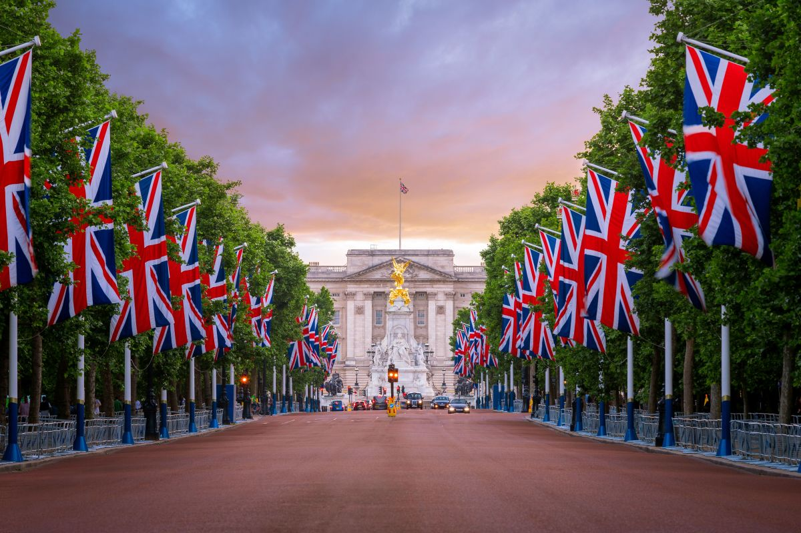
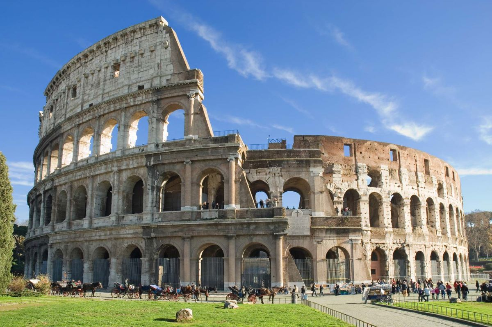
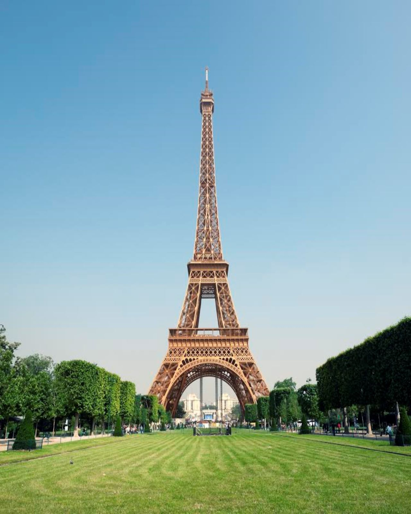
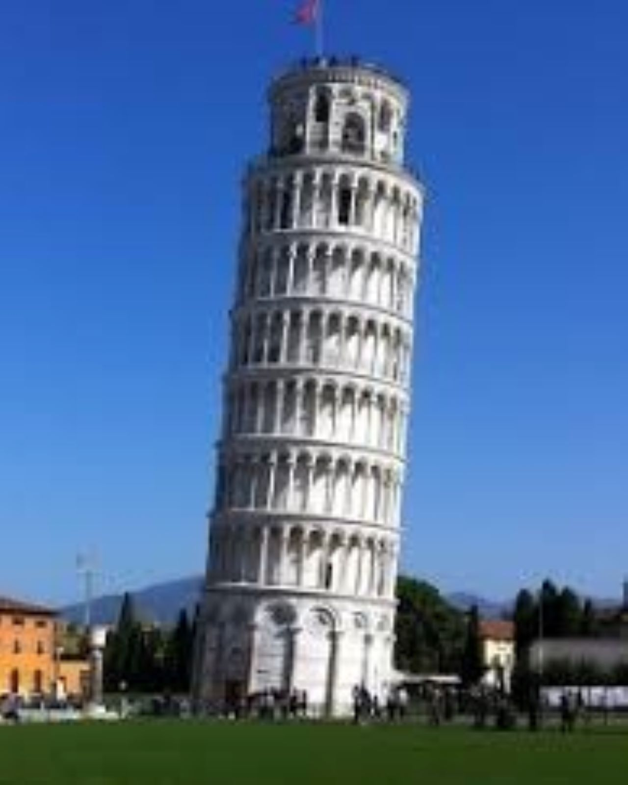
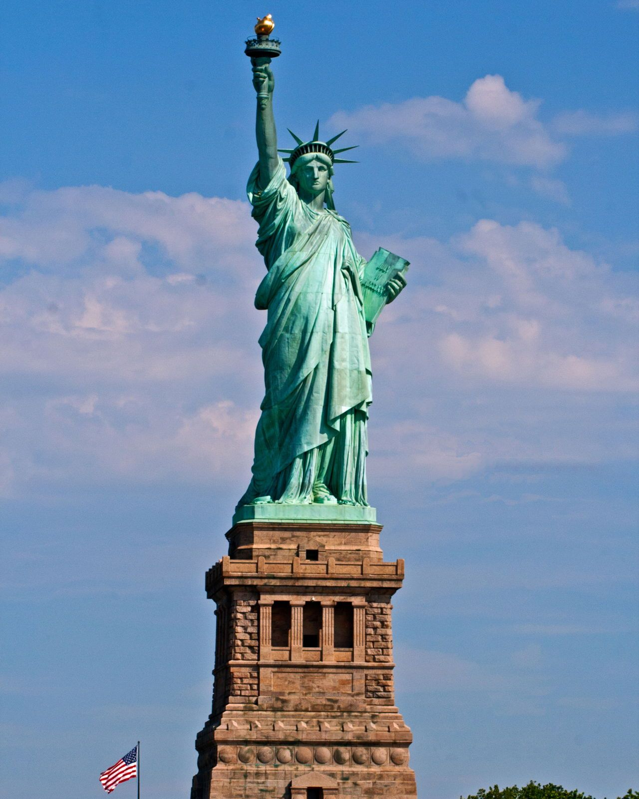
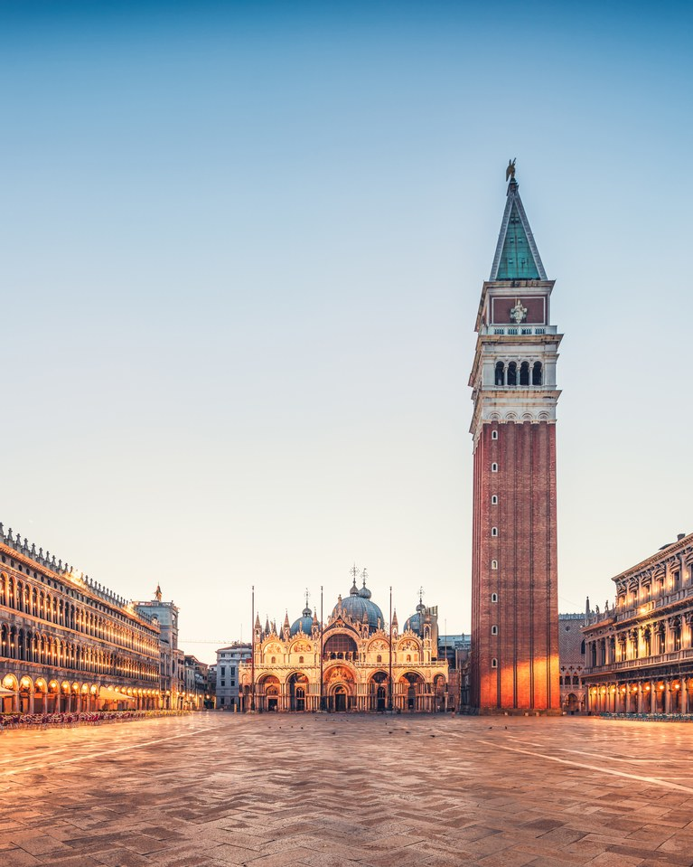
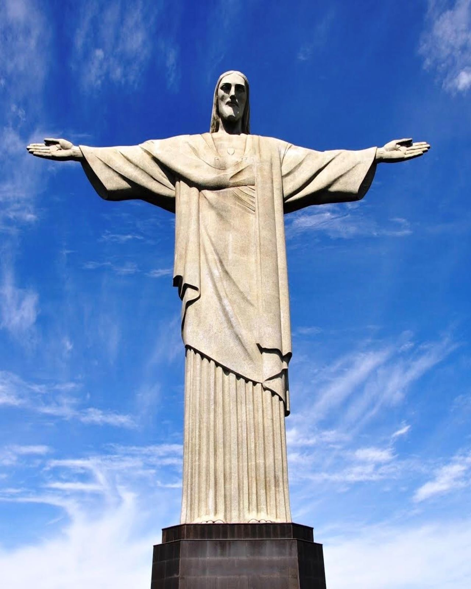
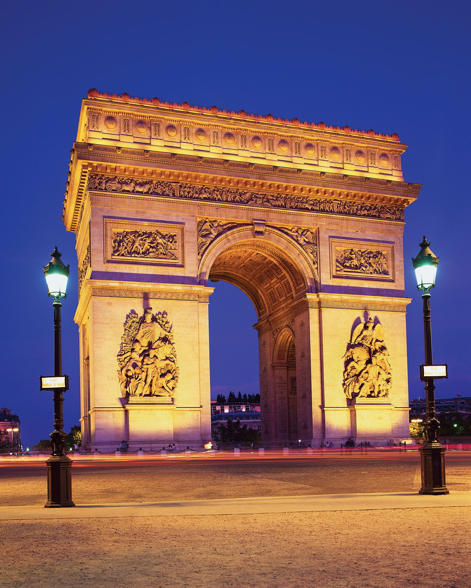
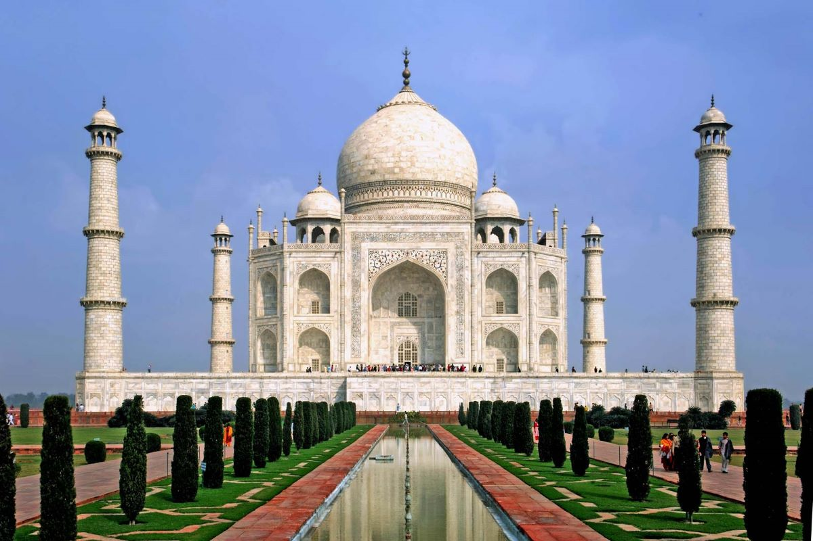

- Buckingham Palace features 775 rooms. Of these rooms, 188 are staff bedrooms, 92 offices, 78 bathrooms, 52 royal and guest bedrooms, and 19 state rooms.
- A child by the name of Edward Jones managed to break into the Palace three times, stealing food from the kitchen, the Queen’s underwear, and even getting a chance to sit on the throne!
- Over the course of World War Two, Buckingham Palace survived 9 German Bombs attacks.
- King George V enforced rationing within the Palace during World War I. This even involved locking the wine cellars and refraining from the consumption of alcohol.

- At the Colosseum’s major events, there was often no entry free because they were organized and paid for by the emperors themselves. Emperors would use this as a way to gain popularity and support from the public.
- The first games ever to be held were in 80 A.D, under Emperor Titus (the son of Vespasian), and they ran for 100 days straight.
- Below the Colosseum were numerous rooms and underground passages. Here is where the animals and gladiators were kept, waiting to meet their fate in the arena above.

- When it was built, the Golden Gate Bridge spanned 4,200 feet and staked its claim as the longest suspension bridge in the world.
- OVER 1 BILLION PEOPLE HAVE USED THE GOLDEN GATE BRIDGE…
- When the bridge was built in the 1930s, safety measures weren’t quite as stringent as they are now. Steps were taken to ensure the workers’ safety but not all accidents could be prevented.

- The Eiffel Tower was finished on March 31, 1889.
- It was the tallest man-made structure for 41 years until the Chrysler Building in New York was built in 1930.
- It is 324 meters tall and has 1,665 steps.
- Repainting the tower, which happens every seven years, requires 60 tonnes of paint.
- The eiffel tower has its own lego set.

- Construction on the Leaning Tower of Pisa took 176 years.
- The tower initially leaned to the north, then it began leaning to the south upon further construction in 1272.
- Pisa’s soft soil is responsible for several other leaning towers, including the Campanile of San Nicola and the Campanile of San Michele degli Scalzi.

- During the restoration completed in 1986, the new torch was carefully covered with thin sheets of 24k gold.
- At the feet of the Statue lie broken shackles of oppression and tyranny. Height of the Statue from her heel to the top of her head is 111 feet, 6 inches.

- This mosaic, which dates back to the 13th century, depicts the adventures of a group of Venetians who stole St. Mark’s body from Egypt in the 9th century.
- In the 16th and 17th centuries, many of Italy’s finest painters were asked to create cartoon designs for mosaic restoration work. A few of the most famous artists who worked on this project include Veronese, Tintoretto, and Titian. Indeed, you can find mosaics based on the cartoons of Titian in the sacristy area.
- The techniques used to make Basilica San Marco’s oldest mosaics come from the 5th century BC in Ancient Greece. Interestingly, a few historians believe some of the earliest mosaics might have been completed in Constantinople before they were shipped to Venice.

- The initial model was not the one that was actually made. He represented Jesus holding a globe, standing on a pedestal that was to symbolize the world.
- In 2008, the statue suffered severe damage to the head, eyebrows and fingers caused by a lightning strike.
- This statue became one of the Seven New Wonders of the World on July 7, 2007.

- The construction of the Arc de Triomphe in Paris was ordered in 1806 by Napoleon, the French Emperor.
- The construction of Arc de Triomphe was completed in 1836, long after Napoleon’s death in 1821.
- The names of 128 battles of the first French Republic and Napoleon’s Empire are written on the white walls under the vault together with the names of the generals who took part in them.

- With a total length of 21,196.18 km, equal to half the length of the Equator, the Great Wall of China is the longest feat of human engineering.
- During the Cultural Revolution from 1960s to 1970s, miles of the Wall were vandalized or destroyed to make way for infrastructure construction.
- The building materials of the walls included the rammed earth, bricks, stones, and rocks. It was totally different from the modern mixture of sand and cement, as it included glutinous rice flour.

- The ancient Inca site which was built midway through the mid-1400’s but was unknown to outsiders until 1911, when it was brought to international attention by archaeologist Hiram Bingham.
- The Incas spoke a language called Quechua and many people still speak the language to this day. Machu Picchu means “Old Mountain” or “Old Peak” when translated from Quechua into English.
- More than 150 buildings make up Machu Picchu. These buildings range from temples and sanctuaries to baths and houses. There are also over 100 flights of stairs in Machu Picchu.

- Sick with grief, Shah Jahan was first inspired to build the Taj Mahal after his third wife, Mumtaz Mahal, died while giving birth to their 14th child. His wife was in labor for 30 hours before she died at age 40.
- Islamic tradition forbids the decoration of graves, so Shah Jahan and his wife are actually buried in a plain crypt beneath the main inner chamber of the Taj Mahal.
- Over 1,000 elephants were used to transport heavy materials and supplies for construction.